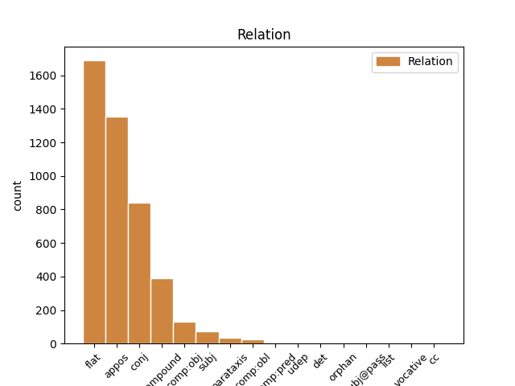
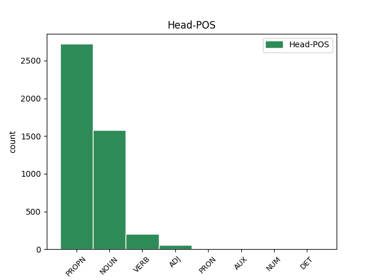
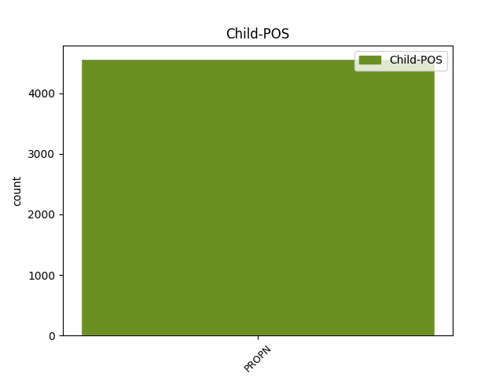

Distribution of features within this leaf



Agreement Rules sorted by frequency.
- When the dependent token is the flat multiword expression(flat) of the head token, and the dependent token is PROPN.
1 Kako _ _ _ _ 0 _ _ _
2 je _ _ _ _ 0 _ _ _
3 kazao _ _ _ _ 0 _ _ _
4 riječki _ _ _ _ 0 _ _ _
5 gradonačelnik _ _ _ _ 0 _ _ _
6 Vojko Vojko PROPN Npmsn Case=Nom|Gender=Masc|Number=Sing 0 _ _ _
7 Obersnel Obersnel PROPN Npmsn Case=Nom|Gender=Masc|Number=Sing 6 flat _ SpaceAfter=No
8 , _ _ _ _ 0 _ _ _
9 pokretanjem _ _ _ _ 0 _ _ _
10 studija _ _ _ _ 0 _ _ _
11 i _ _ _ _ 0 _ _ _
12 programa _ _ _ _ 0 _ _ _
13 cjeloživotnog _ _ _ _ 0 _ _ _
14 učenja _ _ _ _ 0 _ _ _
15 u _ _ _ _ 0 _ _ _
16 Rijeci _ _ _ _ 0 _ _ _
17 će _ _ _ _ 0 _ _ _
18 biti _ _ _ _ 0 _ _ _
19 zaokruženo _ _ _ _ 0 _ _ _
20 učenje _ _ _ _ 0 _ _ _
21 talijanskog _ _ _ _ 0 _ _ _
22 jezika _ _ _ _ 0 _ _ _
23 , _ _ _ _ 0 _ _ _
24 koje _ _ _ _ 0 _ _ _
25 sada _ _ _ _ 0 _ _ _
26 postoji _ _ _ _ 0 _ _ _
27 u _ _ _ _ 0 _ _ _
28 jaslicama _ _ _ _ 0 _ _ _
29 , _ _ _ _ 0 _ _ _
30 vrtićima _ _ _ _ 0 _ _ _
31 te _ _ _ _ 0 _ _ _
32 osnovnim _ _ _ _ 0 _ _ _
33 i _ _ _ _ 0 _ _ _
34 srednjim _ _ _ _ 0 _ _ _
35 školama _ _ _ _ 0 _ _ _
36 . _ _ _ _ 0 _ _ _
1 ( _ _ _ _ 0 _ _ _
2 3 _ _ _ _ 0 _ _ _
3 ) _ _ _ _ 0 _ _ _
4 Za _ _ _ _ 0 _ _ _
5 dio dio NOUN Ncmsan Animacy=Inan|Case=Acc|Gender=Masc|Number=Sing 0 _ _ _
6 građevinskog _ _ _ _ 0 _ _ _
7 područja _ _ _ _ 0 _ _ _
8 naselja _ _ _ _ 0 _ _ _
9 Novi _ _ _ _ 0 _ _ _
10 Vinodolski _ _ _ _ 0 _ _ _
11 NA1 Na1 PROPN Npmsn Case=Nom|Gender=Masc|Number=Sing 5 appos _ _
12 1 _ _ _ _ 0 _ _ _
13 - _ _ _ _ 0 _ _ _
14 registriranu _ _ _ _ 0 _ _ _
15 povijesnu _ _ _ _ 0 _ _ _
16 graditeljsku _ _ _ _ 0 _ _ _
17 cjelinu _ _ _ _ 0 _ _ _
18 , _ _ _ _ 0 _ _ _
19 moguća _ _ _ _ 0 _ _ _
20 su _ _ _ _ 0 _ _ _
21 odstupanja _ _ _ _ 0 _ _ _
22 od _ _ _ _ 0 _ _ _
23 zadanih _ _ _ _ 0 _ _ _
24 graničnih _ _ _ _ 0 _ _ _
25 vrijednosti _ _ _ _ 0 _ _ _
26 navedenih _ _ _ _ 0 _ _ _
27 u _ _ _ _ 0 _ _ _
28 člancima _ _ _ _ 0 _ _ _
29 27. _ _ _ _ 0 _ _ _
30 i _ _ _ _ 0 _ _ _
31 28. _ _ _ _ 0 _ _ _
32 Ovih _ _ _ _ 0 _ _ _
33 Odredbi _ _ _ _ 0 _ _ _
34 ali _ _ _ _ 0 _ _ _
35 samo _ _ _ _ 0 _ _ _
36 u _ _ _ _ 0 _ _ _
37 smislu _ _ _ _ 0 _ _ _
38 uvjeta _ _ _ _ 0 _ _ _
39 određenih _ _ _ _ 0 _ _ _
40 od _ _ _ _ 0 _ _ _
41 nadležnog _ _ _ _ 0 _ _ _
42 Konzervatorskog _ _ _ _ 0 _ _ _
43 odjela _ _ _ _ 0 _ _ _
44 ( _ _ _ _ 0 _ _ _
45 označeno _ _ _ _ 0 _ _ _
46 kao _ _ _ _ 0 _ _ _
47 gradsko _ _ _ _ 0 _ _ _
48 naselje _ _ _ _ 0 _ _ _
49 - _ _ _ _ 0 _ _ _
50 zone _ _ _ _ 0 _ _ _
51 14 _ _ _ _ 0 _ _ _
52 A _ _ _ _ 0 _ _ _
53 i _ _ _ _ 0 _ _ _
54 14 _ _ _ _ 0 _ _ _
55 B _ _ _ _ 0 _ _ _
56 na _ _ _ _ 0 _ _ _
57 kartografskom _ _ _ _ 0 _ _ _
58 prikazu _ _ _ _ 0 _ _ _
59 br. _ _ _ _ 0 _ _ _
60 4.1. _ _ _ _ 0 _ _ _
61 » _ _ _ _ 0 _ _ _
62 Građevinska _ _ _ _ 0 _ _ _
63 područja _ _ _ _ 0 _ _ _
64 « _ _ _ _ 0 _ _ _
65 u _ _ _ _ 0 _ _ _
66 mjerilu _ _ _ _ 0 _ _ _
67 1:5000 _ _ _ _ 0 _ _ _
68 ) _ _ _ _ 0 _ _ _
69 . _ _ _ _ 0 _ _ _
1 Kako _ _ _ _ 0 _ _ _
2 u _ _ _ _ 0 _ _ _
3 svom _ _ _ _ 0 _ _ _
4 priopćenju _ _ _ _ 0 _ _ _
5 napominju _ _ _ _ 0 _ _ _
6 iz _ _ _ _ 0 _ _ _
7 Spona _ _ _ _ 0 _ _ _
8 komunikacija _ _ _ _ 0 _ _ _
9 , _ _ _ _ 0 _ _ _
10 u _ _ _ _ 0 _ _ _
11 tekstu _ _ _ _ 0 _ _ _
12 se _ _ _ _ 0 _ _ _
13 navodi _ _ _ _ 0 _ _ _
14 da _ _ _ _ 0 _ _ _
15 su _ _ _ _ 0 _ _ _
16 Irska Irska PROPN Npfsn Case=Nom|Gender=Fem|Number=Sing 0 _ _ _
17 i _ _ _ _ 0 _ _ _
18 Poljska Poljska PROPN Npfsn Case=Nom|Gender=Fem|Number=Sing 16 conj _ _
19 jedne _ _ _ _ 0 _ _ _
20 od _ _ _ _ 0 _ _ _
21 rijetkih _ _ _ _ 0 _ _ _
22 zemalja _ _ _ _ 0 _ _ _
23 u _ _ _ _ 0 _ _ _
24 kojima _ _ _ _ 0 _ _ _
25 je _ _ _ _ 0 _ _ _
26 ova _ _ _ _ 0 _ _ _
27 pilula _ _ _ _ 0 _ _ _
28 posve _ _ _ _ 0 _ _ _
29 zabranjena _ _ _ _ 0 _ _ _
30 , _ _ _ _ 0 _ _ _
31 što _ _ _ _ 0 _ _ _
32 je _ _ _ _ 0 _ _ _
33 netočno _ _ _ _ 0 _ _ _
34 , _ _ _ _ 0 _ _ _
35 jer _ _ _ _ 0 _ _ _
36 je _ _ _ _ 0 _ _ _
37 pilula _ _ _ _ 0 _ _ _
38 indicirana _ _ _ _ 0 _ _ _
39 na _ _ _ _ 0 _ _ _
40 hitnu _ _ _ _ 0 _ _ _
41 kontracepciju _ _ _ _ 0 _ _ _
42 , _ _ _ _ 0 _ _ _
43 koja _ _ _ _ 0 _ _ _
44 sadrži _ _ _ _ 0 _ _ _
45 levonorgestrel _ _ _ _ 0 _ _ _
46 , _ _ _ _ 0 _ _ _
47 dostupna _ _ _ _ 0 _ _ _
48 u _ _ _ _ 0 _ _ _
49 obje _ _ _ _ 0 _ _ _
50 države _ _ _ _ 0 _ _ _
51 , _ _ _ _ 0 _ _ _
52 gdje _ _ _ _ 0 _ _ _
53 se _ _ _ _ 0 _ _ _
54 prodaje _ _ _ _ 0 _ _ _
55 u _ _ _ _ 0 _ _ _
56 ljekarnama _ _ _ _ 0 _ _ _
57 na _ _ _ _ 0 _ _ _
58 liječnički _ _ _ _ 0 _ _ _
59 recept _ _ _ _ 0 _ _ _
60 , _ _ _ _ 0 _ _ _
61 kao _ _ _ _ 0 _ _ _
62 što _ _ _ _ 0 _ _ _
63 je _ _ _ _ 0 _ _ _
64 to _ _ _ _ 0 _ _ _
65 od _ _ _ _ 0 _ _ _
66 danas _ _ _ _ 0 _ _ _
67 moguće _ _ _ _ 0 _ _ _
68 i _ _ _ _ 0 _ _ _
69 u _ _ _ _ 0 _ _ _
70 Hrvatskoj _ _ _ _ 0 _ _ _
71 . _ _ _ _ 0 _ _ _
1 Osigurajte _ _ _ _ 0 _ _ _
2 na _ _ _ _ 0 _ _ _
3 vrijeme _ _ _ _ 0 _ _ _
4 svoje _ _ _ _ 0 _ _ _
5 mjesto _ _ _ _ 0 _ _ _
6 putem _ _ _ _ 0 _ _ _
7 weba _ _ _ _ 0 _ _ _
8 Green Green PROPN Npmsn Case=Nom|Gender=Masc|Number=Sing 0 _ _ _
9 Gold _ _ _ _ 0 _ _ _
10 Cluba Club PROPN Npmsg Case=Gen|Gender=Masc|Number=Sing 8 compound _ SpaceAfter=No
11 . _ _ _ _ 0 _ _ _
1 Prošle _ _ _ _ 0 _ _ _
2 sezone _ _ _ _ 0 _ _ _
3 su _ _ _ _ 0 _ _ _
4 ' _ _ _ _ 0 _ _ _
5 Spursi _ _ _ _ 0 _ _ _
6 ' _ _ _ _ 0 _ _ _
7 također _ _ _ _ 0 _ _ _
8 pred _ _ _ _ 0 _ _ _
9 sam _ _ _ _ 0 _ _ _
10 kraj _ _ _ _ 0 _ _ _
11 sezone _ _ _ _ 0 _ _ _
12 prestigli prestići VERB Vmp-pm Gender=Masc|Number=Plur|Tense=Past|VerbForm=Part|Voice=Act 0 _ _ _
13 City City PROPN Npmsn Case=Nom|Gender=Masc|Number=Sing 12 comp:obj _ _
14 i _ _ _ _ 0 _ _ _
15 uhvatili _ _ _ _ 0 _ _ _
16 mjesto _ _ _ _ 0 _ _ _
17 koje _ _ _ _ 0 _ _ _
18 vodi _ _ _ _ 0 _ _ _
19 u _ _ _ _ 0 _ _ _
20 LP _ _ _ _ 0 _ _ _
21 , _ _ _ _ 0 _ _ _
22 a _ _ _ _ 0 _ _ _
23 kakve _ _ _ _ 0 _ _ _
24 će _ _ _ _ 0 _ _ _
25 sreće _ _ _ _ 0 _ _ _
26 biti _ _ _ _ 0 _ _ _
27 ove _ _ _ _ 0 _ _ _
28 sezone _ _ _ _ 0 _ _ _
29 , _ _ _ _ 0 _ _ _
30 saznat _ _ _ _ 0 _ _ _
31 ćemo _ _ _ _ 0 _ _ _
32 uskoro _ _ _ _ 0 _ _ _
33 . _ _ _ _ 0 _ _ _
1 Jose Jose PROPN Npmsn Case=Nom|Gender=Masc|Number=Sing 3 subj _ _
2 Mourinho _ _ _ _ 0 _ _ _
3 nametnuo nametnuti VERB Vmp-sm Gender=Masc|Number=Sing|Tense=Past|VerbForm=Part|Voice=Act 0 _ _ _
4 stroga _ _ _ _ 0 _ _ _
5 pravila _ _ _ _ 0 _ _ _
6 igračima _ _ _ _ 0 _ _ _
1 Atlantic Atlantic PROPN Npmsn Case=Nom|Gender=Masc|Number=Sing 5 parataxis _ _
2 City _ _ _ _ 0 _ _ _
3 : _ _ _ _ 0 _ _ _
4 Banks _ _ _ _ 0 _ _ _
5 srušio srušiti VERB Vmp-sm Gender=Masc|Number=Sing|Tense=Past|VerbForm=Part|Voice=Act 0 _ _ _
6 mit _ _ _ _ 0 _ _ _
7 o _ _ _ _ 0 _ _ _
8 Mitchellu _ _ _ _ 0 _ _ _
1 Ova _ _ _ _ 0 _ _ _
2 svetkovina _ _ _ _ 0 _ _ _
3 uspostavljena _ _ _ _ 0 _ _ _
4 je _ _ _ _ 0 _ _ _
5 da _ _ _ _ 0 _ _ _
6 bismo _ _ _ _ 0 _ _ _
7 se _ _ _ _ 0 _ _ _
8 zahvalili zahvaliti VERB Vmp-pm Gender=Masc|Number=Plur|Tense=Past|VerbForm=Part|Voice=Act 0 _ _ _
9 Gospodinu Gospodin PROPN Npmsd Case=Dat|Gender=Masc|Number=Sing 8 comp:obl _ _
10 za _ _ _ _ 0 _ _ _
11 to _ _ _ _ 0 _ _ _
12 što _ _ _ _ 0 _ _ _
13 se _ _ _ _ 0 _ _ _
14 učinio _ _ _ _ 0 _ _ _
15 našom _ _ _ _ 0 _ _ _
16 hranom _ _ _ _ 0 _ _ _
17 i _ _ _ _ 0 _ _ _
18 našim _ _ _ _ 0 _ _ _
19 pićem _ _ _ _ 0 _ _ _
20 na _ _ _ _ 0 _ _ _
21 Božanskom _ _ _ _ 0 _ _ _
22 stolu _ _ _ _ 0 _ _ _
23 Euharistije _ _ _ _ 0 _ _ _
24 i _ _ _ _ 0 _ _ _
25 što _ _ _ _ 0 _ _ _
26 je _ _ _ _ 0 _ _ _
27 tako _ _ _ _ 0 _ _ _
28 htio _ _ _ _ 0 _ _ _
29 ostati _ _ _ _ 0 _ _ _
30 stvarno _ _ _ _ 0 _ _ _
31 prisutan _ _ _ _ 0 _ _ _
32 među _ _ _ _ 0 _ _ _
33 nama _ _ _ _ 0 _ _ _
34 u _ _ _ _ 0 _ _ _
35 Presvetom _ _ _ _ 0 _ _ _
36 Oltarskom _ _ _ _ 0 _ _ _
37 Sakramentu _ _ _ _ 0 _ _ _
38 . _ _ _ _ 0 _ _ _
1 Dobitnik _ _ _ _ 0 _ _ _
2 je _ _ _ _ 0 _ _ _
3 povelje _ _ _ _ 0 _ _ _
4 Visoka _ _ _ _ 0 _ _ _
5 žuta _ _ _ _ 0 _ _ _
6 žita _ _ _ _ 0 _ _ _
7 , _ _ _ _ 0 _ _ _
8 Grba _ _ _ _ 0 _ _ _
9 grada _ _ _ _ 0 _ _ _
10 Slavonskog _ _ _ _ 0 _ _ _
11 Broda _ _ _ _ 0 _ _ _
12 , _ _ _ _ 0 _ _ _
13 Zlatne _ _ _ _ 0 _ _ _
14 povelje _ _ _ _ 0 _ _ _
15 Matice _ _ _ _ 0 _ _ _
16 hrvatske _ _ _ _ 0 _ _ _
17 , _ _ _ _ 0 _ _ _
18 povelje _ _ _ _ 0 _ _ _
19 Julije _ _ _ _ 0 _ _ _
20 Benešić _ _ _ _ 0 _ _ _
21 , _ _ _ _ 0 _ _ _
22 nagrada _ _ _ _ 0 _ _ _
23 za _ _ _ _ 0 _ _ _
24 životno _ _ _ _ 0 _ _ _
25 djelo _ _ _ _ 0 _ _ _
26 Josip Josip PROPN Npmsn Case=Nom|Gender=Masc|Number=Sing 28 comp:pred _ _
27 i _ _ _ _ 0 _ _ _
28 Ivan Ivan PROPN Npmsn Case=Nom|Gender=Masc|Number=Sing 0 _ _ _
29 Kozarac _ _ _ _ 0 _ _ _
30 te _ _ _ _ 0 _ _ _
31 Zlatni _ _ _ _ 0 _ _ _
32 grb _ _ _ _ 0 _ _ _
33 Brodsko-posavske _ _ _ _ 0 _ _ _
34 županije _ _ _ _ 0 _ _ _
35 , _ _ _ _ 0 _ _ _
36 a _ _ _ _ 0 _ _ _
37 za _ _ _ _ 0 _ _ _
38 zasluge _ _ _ _ 0 _ _ _
39 u _ _ _ _ 0 _ _ _
40 kulturi _ _ _ _ 0 _ _ _
41 odlikovan _ _ _ _ 0 _ _ _
42 je _ _ _ _ 0 _ _ _
43 i _ _ _ _ 0 _ _ _
44 Redom _ _ _ _ 0 _ _ _
45 Danice _ _ _ _ 0 _ _ _
46 hrvatske _ _ _ _ 0 _ _ _
47 s _ _ _ _ 0 _ _ _
48 likom _ _ _ _ 0 _ _ _
49 Marka _ _ _ _ 0 _ _ _
50 Marulića _ _ _ _ 0 _ _ _
51 . _ _ _ _ 0 _ _ _
1 Dakle _ _ _ _ 0 _ _ _
2 , _ _ _ _ 0 _ _ _
3 slično _ _ _ _ 0 _ _ _
4 kao _ _ _ _ 0 _ _ _
5 u _ _ _ _ 0 _ _ _
6 Amsterdamu _ _ _ _ 0 _ _ _
7 , _ _ _ _ 0 _ _ _
8 kada _ _ _ _ 0 _ _ _
9 su _ _ _ _ 0 _ _ _
10 Mandžukić _ _ _ _ 0 _ _ _
11 i _ _ _ _ 0 _ _ _
12 Tadić _ _ _ _ 0 _ _ _
13 , _ _ _ _ 0 _ _ _
14 poslije _ _ _ _ 0 _ _ _
15 i _ _ _ _ 0 _ _ _
16 Mikić _ _ _ _ 0 _ _ _
17 pritiskali _ _ _ _ 0 _ _ _
18 i _ _ _ _ 0 _ _ _
19 izbezumili _ _ _ _ 0 _ _ _
20 Stama _ _ _ _ 0 _ _ _
21 i _ _ _ _ 0 _ _ _
22 Van _ _ _ _ 0 _ _ _
23 der der PROPN Npmsay Animacy=Anim|Case=Acc|Gender=Masc|Number=Sing 24 det _ _
24 Wiela Wiel PROPN Npmsay Animacy=Anim|Case=Acc|Gender=Masc|Number=Sing 0 _ _ _
25 . _ _ _ _ 0 _ _ _
1 Lošije _ _ _ _ 0 _ _ _
2 od _ _ _ _ 0 _ _ _
3 Kaptola _ _ _ _ 0 _ _ _
4 u _ _ _ _ 0 _ _ _
5 raspodjeli _ _ _ _ 0 _ _ _
6 proračunskog _ _ _ _ 0 _ _ _
7 novca _ _ _ _ 0 _ _ _
8 2008. _ _ _ _ 0 _ _ _
9 godine _ _ _ _ 0 _ _ _
10 prošli _ _ _ _ 0 _ _ _
11 su _ _ _ _ 0 _ _ _
12 , _ _ _ _ 0 _ _ _
13 primjerice _ _ _ _ 0 _ _ _
14 , _ _ _ _ 0 _ _ _
15 i _ _ _ _ 0 _ _ _
16 Vlada _ _ _ _ 0 _ _ _
17 koja _ _ _ _ 0 _ _ _
18 je _ _ _ _ 0 _ _ _
19 na _ _ _ _ 0 _ _ _
20 raspolaganju _ _ _ _ 0 _ _ _
21 imala _ _ _ _ 0 _ _ _
22 289 _ _ _ _ 0 _ _ _
23 milijuna _ _ _ _ 0 _ _ _
24 kuna _ _ _ _ 0 _ _ _
25 , _ _ _ _ 0 _ _ _
26 Sabor Sabor PROPN Npmsn Case=Nom|Gender=Masc|Number=Sing 30 orphan _ orig_deprel=nsubj
27 177 _ _ _ _ 0 _ _ _
28 , _ _ _ _ 0 _ _ _
29 a _ _ _ _ 0 _ _ _
30 Ured ured NOUN Ncmsn Case=Nom|Gender=Masc|Number=Sing 0 _ _ _
31 predsjednika _ _ _ _ 0 _ _ _
32 55 _ _ _ _ 0 _ _ _
33 milijuna _ _ _ _ 0 _ _ _
34 kuna _ _ _ _ 0 _ _ _
35 . _ _ _ _ 0 _ _ _
1 Mirjana Mirjana PROPN Npfsn Case=Nom|Gender=Fem|Number=Sing 3 subj@pass _ _
2 Marković _ _ _ _ 0 _ _ _
3 optužena optužiti ADJ Appfsny Case=Nom|Definite=Def|Degree=Pos|Gender=Fem|Number=Sing|VerbForm=Part|Voice=Pass 0 _ _ _
4 za _ _ _ _ 0 _ _ _
5 zloporabu _ _ _ _ 0 _ _ _
6 dužnosti _ _ _ _ 0 _ _ _
1 Karl _ _ _ _ 0 _ _ _
2 Friedrich _ _ _ _ 0 _ _ _
3 May _ _ _ _ 0 _ _ _
4 rođen _ _ _ _ 0 _ _ _
5 je _ _ _ _ 0 _ _ _
6 25. _ _ _ _ 0 _ _ _
7 veljače _ _ _ _ 0 _ _ _
8 1842. _ _ _ _ 0 _ _ _
9 u _ _ _ _ 0 _ _ _
10 Ernstthalu _ _ _ _ 0 _ _ _
11 , _ _ _ _ 0 _ _ _
12 kao _ _ _ _ 0 _ _ _
13 peto _ _ _ _ 0 _ _ _
14 dijete _ _ _ _ 0 _ _ _
15 tkalca _ _ _ _ 0 _ _ _
16 Heinricha _ _ _ _ 0 _ _ _
17 Augusta _ _ _ _ 0 _ _ _
18 i _ _ _ _ 0 _ _ _
19 supruge _ _ _ _ 0 _ _ _
20 mu _ _ _ _ 0 _ _ _
21 Christiane _ _ _ _ 0 _ _ _
22 Wilhelmine _ _ _ _ 0 _ _ _
23 , _ _ _ _ 0 _ _ _
24 rođene roditi ADJ Appfsgy Case=Gen|Definite=Def|Degree=Pos|Gender=Fem|Number=Sing|VerbForm=Part|Voice=Pass 0 _ _ _
25 Weise Weise PROPN Npfsn Case=Nom|Gender=Fem|Number=Sing 24 udep _ SpaceAfter=No
26 . _ _ _ _ 0 _ _ _
1 Zapovjednik _ _ _ _ 0 _ _ _
2 njemačkih _ _ _ _ 0 _ _ _
3 snaga _ _ _ _ 0 _ _ _
4 na _ _ _ _ 0 _ _ _
5 Balkanu _ _ _ _ 0 _ _ _
6 , _ _ _ _ 0 _ _ _
7 general _ _ _ _ 0 _ _ _
8 Alexander _ _ _ _ 0 _ _ _
9 von von PROPN Npmsn Case=Nom|Gender=Masc|Number=Sing 10 cc _ _
10 Löhr Löhr PROPN Npmsn Case=Nom|Gender=Masc|Number=Sing 0 _ _ _
11 je _ _ _ _ 0 _ _ _
12 izvjestio _ _ _ _ 0 _ _ _
13 njemačko _ _ _ _ 0 _ _ _
14 Vrhovno _ _ _ _ 0 _ _ _
15 zapovjedništvo _ _ _ _ 0 _ _ _
16 da _ _ _ _ 0 _ _ _
17 Draža _ _ _ _ 0 _ _ _
18 Mihailović _ _ _ _ 0 _ _ _
19 snosi _ _ _ _ 0 _ _ _
20 glavnu _ _ _ _ 0 _ _ _
21 krivicu _ _ _ _ 0 _ _ _
22 za _ _ _ _ 0 _ _ _
23 neuspjeh _ _ _ _ 0 _ _ _
24 i _ _ _ _ 0 _ _ _
25 da _ _ _ _ 0 _ _ _
26 je _ _ _ _ 0 _ _ _
27 kao _ _ _ _ 0 _ _ _
28 vojni _ _ _ _ 0 _ _ _
29 zapovjednik _ _ _ _ 0 _ _ _
30 potpuno _ _ _ _ 0 _ _ _
31 zatajio _ _ _ _ 0 _ _ _
32 . _ _ _ _ 0 _ _ _
1 Dajem davati NOUN Ncmsi Case=Ins|Gender=Masc|Number=Sing 0 _ _ _
2 ti _ _ _ _ 0 _ _ _
3 moj _ _ _ _ 0 _ _ _
4 dobri _ _ _ _ 0 _ _ _
5 Isuse Isus PROPN Npmsv Case=Voc|Gender=Masc|Number=Sing 1 vocative _ _
6 i _ _ _ _ 0 _ _ _
7 svemogući _ _ _ _ 0 _ _ _
8 Bože _ _ _ _ 0 _ _ _
9 moju _ _ _ _ 0 _ _ _
10 obitelj _ _ _ _ 0 _ _ _
11 i _ _ _ _ 0 _ _ _
12 sebe _ _ _ _ 0 _ _ _
13 u _ _ _ _ 0 _ _ _
14 Vaše _ _ _ _ 0 _ _ _
15 ruke _ _ _ _ 0 _ _ _
16 kao _ _ _ _ 0 _ _ _
17 i _ _ _ _ 0 _ _ _
18 do _ _ _ _ 0 _ _ _
19 sada _ _ _ _ 0 _ _ _
20 . _ _ _ _ 0 _ _ _
1 Jedanaest _ _ _ _ 0 _ _ _
2 mjeseci _ _ _ _ 0 _ _ _
3 nakon _ _ _ _ 0 _ _ _
4 što _ _ _ _ 0 _ _ _
5 je _ _ _ _ 0 _ _ _
6 hrvatska _ _ _ _ 0 _ _ _
7 zrakoplovna _ _ _ _ 0 _ _ _
8 kompanija _ _ _ _ 0 _ _ _
9 Croatia _ _ _ _ 0 _ _ _
10 Airlines _ _ _ _ 0 _ _ _
11 , _ _ _ _ 0 _ _ _
12 zbog _ _ _ _ 0 _ _ _
13 racionalizacije _ _ _ _ 0 _ _ _
14 poslovanja _ _ _ _ 0 _ _ _
15 , _ _ _ _ 0 _ _ _
16 ukinula _ _ _ _ 0 _ _ _
17 sezonsku _ _ _ _ 0 _ _ _
18 avionsku _ _ _ _ 0 _ _ _
19 liniju _ _ _ _ 0 _ _ _
20 Zagreb Zagreb PROPN Npmsn Case=Nom|Gender=Masc|Number=Sing 0 _ _ _
21 - _ _ _ _ 0 _ _ _
22 Rijeka _ _ _ _ 0 _ _ _
23 - _ _ _ _ 0 _ _ _
24 London London PROPN Npmsn Case=Nom|Gender=Masc|Number=Sing 20 list _ SpaceAfter=No
25 , _ _ _ _ 0 _ _ _
26 direktor _ _ _ _ 0 _ _ _
27 Croatia _ _ _ _ 0 _ _ _
28 Airlinesa _ _ _ _ 0 _ _ _
29 Šimunović _ _ _ _ 0 _ _ _
30 i _ _ _ _ 0 _ _ _
31 primorsko-goranski _ _ _ _ 0 _ _ _
32 župan _ _ _ _ 0 _ _ _
33 Komadina _ _ _ _ 0 _ _ _
34 na _ _ _ _ 0 _ _ _
35 županovom _ _ _ _ 0 _ _ _
36 su _ _ _ _ 0 _ _ _
37 kolegiju _ _ _ _ 0 _ _ _
38 najavili _ _ _ _ 0 _ _ _
39 povratak _ _ _ _ 0 _ _ _
40 domaće _ _ _ _ 0 _ _ _
41 aviokompanije _ _ _ _ 0 _ _ _
42 na _ _ _ _ 0 _ _ _
43 otok _ _ _ _ 0 _ _ _
44 Krk _ _ _ _ 0 _ _ _
45 u _ _ _ _ 0 _ _ _
46 2011. _ _ _ _ 0 _ _ _
47 , _ _ _ _ 0 _ _ _
48 što _ _ _ _ 0 _ _ _
49 je _ _ _ _ 0 _ _ _
50 župan _ _ _ _ 0 _ _ _
51 Komadina _ _ _ _ 0 _ _ _
52 ocijenio _ _ _ _ 0 _ _ _
53 važnim _ _ _ _ 0 _ _ _
54 korakom _ _ _ _ 0 _ _ _
55 za _ _ _ _ 0 _ _ _
56 repozicioniranje _ _ _ _ 0 _ _ _
57 Kvarnera _ _ _ _ 0 _ _ _
58 kao _ _ _ _ 0 _ _ _
59 aviodestinacije _ _ _ _ 0 _ _ _
60 i _ _ _ _ 0 _ _ _
61 povezivanja _ _ _ _ 0 _ _ _
62 regije _ _ _ _ 0 _ _ _
63 s _ _ _ _ 0 _ _ _
64 Europom _ _ _ _ 0 _ _ _
65 i _ _ _ _ 0 _ _ _
66 SAD-om _ _ _ _ 0 _ _ _
67 . _ _ _ _ 0 _ _ _
Disagree Examples:
1 " _ _ _ _ 0 _ _ _
2 Dojam _ _ _ _ 0 _ _ _
3 je _ _ _ _ 0 _ _ _
4 da _ _ _ _ 0 _ _ _
5 su _ _ _ _ 0 _ _ _
6 koraci _ _ _ _ 0 _ _ _
7 poduzeti _ _ _ _ 0 _ _ _
8 prema _ _ _ _ 0 _ _ _
9 tim _ _ _ _ 0 _ _ _
10 medijima _ _ _ _ 0 _ _ _
11 , _ _ _ _ 0 _ _ _
12 kojima _ _ _ _ 0 _ _ _
13 su _ _ _ _ 0 _ _ _
14 izrečene _ _ _ _ 0 _ _ _
15 presude _ _ _ _ 0 _ _ _
16 , _ _ _ _ 0 _ _ _
17 selektivni _ _ _ _ 0 _ _ _
18 te _ _ _ _ 0 _ _ _
19 da _ _ _ _ 0 _ _ _
20 institucije _ _ _ _ 0 _ _ _
21 ne _ _ _ _ 0 _ _ _
22 koriste _ _ _ _ 0 _ _ _
23 iste _ _ _ _ 0 _ _ _
24 metode _ _ _ _ 0 _ _ _
25 u _ _ _ _ 0 _ _ _
26 provođenju _ _ _ _ 0 _ _ _
27 zakona _ _ _ _ 0 _ _ _
28 prema _ _ _ _ 0 _ _ _
29 svim _ _ _ _ 0 _ _ _
30 medijima _ _ _ _ 0 _ _ _
31 " _ _ _ _ 0 _ _ _
32 , _ _ _ _ 0 _ _ _
33 izjavila _ _ _ _ 0 _ _ _
34 je _ _ _ _ 0 _ _ _
35 za _ _ _ _ 0 _ _ _
36 SETimes _ _ _ _ 0 _ _ _
37 ravnateljica _ _ _ _ 0 _ _ _
38 Medijskog _ _ _ _ 0 _ _ _
39 instituta institut NOUN Ncmsg Case=Gen|Gender=Masc|Number=Sing 0 _ _ _
40 Makedonije Makedonija PROPN Npfsg Case=Gen|Gender=Fem|Number=Sing 39 compound _ _
41 Biljana _ _ _ _ 0 _ _ _
42 Petkovska _ _ _ _ 0 _ _ _
43 . _ _ _ _ 0 _ _ _
1 Taseva _ _ _ _ 0 _ _ _
2 je _ _ _ _ 0 _ _ _
3 rekla _ _ _ _ 0 _ _ _
4 da _ _ _ _ 0 _ _ _
5 je _ _ _ _ 0 _ _ _
6 Transparency _ _ _ _ 0 _ _ _
7 podnio _ _ _ _ 0 _ _ _
8 zahtjev _ _ _ _ 0 _ _ _
9 Ustavnom _ _ _ _ 0 _ _ _
10 sudu sud NOUN Ncmsd Case=Dat|Gender=Masc|Number=Sing 0 _ _ _
11 Makedonije Makedonija PROPN Npfsg Case=Gen|Gender=Fem|Number=Sing 10 compound _ _
12 za _ _ _ _ 0 _ _ _
13 preispitivanje _ _ _ _ 0 _ _ _
14 zakonitosti _ _ _ _ 0 _ _ _
15 zapljene _ _ _ _ 0 _ _ _
16 . _ _ _ _ 0 _ _ _
1 Član _ _ _ _ 0 _ _ _
2 Predsjedništva predsjedništvo NOUN Ncnsg Case=Gen|Gender=Neut|Number=Sing 0 _ _ _
3 BiH BiH PROPN Npfsg Case=Gen|Gender=Fem|Number=Sing 2 compound _ _
4 Komšić _ _ _ _ 0 _ _ _
5 podnio _ _ _ _ 0 _ _ _
6 ostavku _ _ _ _ 0 _ _ _
7 u _ _ _ _ 0 _ _ _
8 svojoj _ _ _ _ 0 _ _ _
9 stranci _ _ _ _ 0 _ _ _
1 Član _ _ _ _ 0 _ _ _
2 Predsjedništva predsjedništvo NOUN Ncnsg Case=Gen|Gender=Neut|Number=Sing 0 _ _ _
3 BiH BiH PROPN Npfsg Case=Gen|Gender=Fem|Number=Sing 2 compound _ _
4 Željko _ _ _ _ 0 _ _ _
5 Komšić _ _ _ _ 0 _ _ _
6 okrenuo _ _ _ _ 0 _ _ _
7 je _ _ _ _ 0 _ _ _
8 leđa _ _ _ _ 0 _ _ _
9 vladajućoj _ _ _ _ 0 _ _ _
10 Socijaldemokratskoj _ _ _ _ 0 _ _ _
11 partiji _ _ _ _ 0 _ _ _
12 , _ _ _ _ 0 _ _ _
13 uzdrmavši _ _ _ _ 0 _ _ _
14 političku _ _ _ _ 0 _ _ _
15 scenu _ _ _ _ 0 _ _ _
16 u _ _ _ _ 0 _ _ _
17 zemlji _ _ _ _ 0 _ _ _
18 . _ _ _ _ 0 _ _ _
1 Član _ _ _ _ 0 _ _ _
2 Predsjedništva predsjedništvo NOUN Ncnsg Case=Gen|Gender=Neut|Number=Sing 0 _ _ _
3 Bosne Bosna PROPN Npfsg Case=Gen|Gender=Fem|Number=Sing 2 compound _ _
4 i _ _ _ _ 0 _ _ _
5 Hercegovine _ _ _ _ 0 _ _ _
6 ( _ _ _ _ 0 _ _ _
7 BiH _ _ _ _ 0 _ _ _
8 ) _ _ _ _ 0 _ _ _
9 Željko _ _ _ _ 0 _ _ _
10 Komšić _ _ _ _ 0 _ _ _
11 podnio _ _ _ _ 0 _ _ _
12 je _ _ _ _ 0 _ _ _
13 u _ _ _ _ 0 _ _ _
14 utorak _ _ _ _ 0 _ _ _
15 ( _ _ _ _ 0 _ _ _
16 20. _ _ _ _ 0 _ _ _
17 ožujka _ _ _ _ 0 _ _ _
18 ) _ _ _ _ 0 _ _ _
19 ostavku _ _ _ _ 0 _ _ _
20 na _ _ _ _ 0 _ _ _
21 mjesto _ _ _ _ 0 _ _ _
22 potpredsjednika _ _ _ _ 0 _ _ _
23 Socijaldemokratske _ _ _ _ 0 _ _ _
24 partije _ _ _ _ 0 _ _ _
25 ( _ _ _ _ 0 _ _ _
26 SDP _ _ _ _ 0 _ _ _
27 ) _ _ _ _ 0 _ _ _
28 i _ _ _ _ 0 _ _ _
29 dugogodišnje _ _ _ _ 0 _ _ _
30 članstvo _ _ _ _ 0 _ _ _
31 u _ _ _ _ 0 _ _ _
32 najvišem _ _ _ _ 0 _ _ _
33 vodstvu _ _ _ _ 0 _ _ _
34 stranke _ _ _ _ 0 _ _ _
35 . _ _ _ _ 0 _ _ _